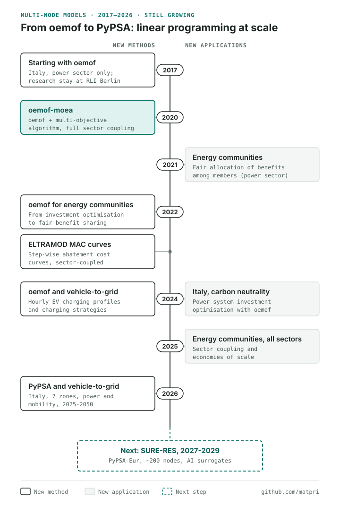

Model history · Updated as the work grows
Multi-node energy system models with high spatial resolution: from oemof to PyPSA
Next to EPLANopt, which treats a region or a country as a single node, my group works on a second family of models: multi-node models solved with linear programming, where a country is split into zones linked by the transmission grid. This is the story of that work from 2017 to today, the open-source tools we used, oemof and PyPSA, and the colleagues I wrote each paper with.

Why multi-node models and linear programming
A single-node model treats a country as one big copper plate: any kilowatt-hour produced anywhere can reach any consumer. That works well for regional planning, but at national scale it hides a real problem. In our PyPSA model of Italy, for example, the cheapest solar resource, agrivoltaics, is concentrated in the south, while 46% of the car fleet is in the north, and the transmission lines between market zones have limits. A multi-node model splits the system into zones, each with its own demand, resources and power plants, and connects them with lines of limited capacity.
More nodes and more hours mean many more variables. Linear programming handles this well: in one solve it finds the least-cost combination of investments and hourly operation, with a guaranteed optimum. That is why we moved to linear programming for this family of models. Spatial resolution is one of the dimensions of model accuracy we discuss in our review of the challenges of energy system models.
The tools: oemof and PyPSA
oemof, the Open Energy Modelling Framework, is an open-source Python framework for building energy system models out of components such as buses, converters, storage and links. It fits anything from a single energy community to a whole country.
PyPSA, Python for Power System Analysis, is an open-source Python toolbox for optimising power and sector-coupled energy systems with a detailed transmission network. Its European model, PyPSA-Eur, provides open data for the whole continent.
2017: starting with oemof
In 2017 we started working with oemof on the Italian power sector. Between March and July 2017 I was a visiting PhD student at the Reiner Lemoine Institut in Berlin, where I worked on a multi-objective version of oemof.
2020: oemof-moea, high temporal and spatial resolution
That work became oemof-moea, which couples oemof to a multi-objective evolutionary algorithm. It optimises investments for a full sector-coupled model of Italy in high temporal and spatial resolution, and returns the trade-off between costs and emissions instead of a single answer. I wrote it with Valeria Casalicchio, Cord Kaldemeyer, Giampaolo Manzolini, David Moser, Alexander Wanitschke and Wolfram Sparber (Applied Energy, 2020). The code is on GitHub and in my portfolio.
2021–2025: energy communities with Valeria Casalicchio
Renewable energy communities share local generation among their members, which raises two questions: what should the community build, and how should it split the benefits? Valeria Casalicchio, whose PhD at Politecnico di Milano I co-supervised from 2019 to 2024, adapted oemof to answer both, with Giampaolo Manzolini and David Moser.
- An optimal allocation method for a fair distribution of the benefits among members, for the power sector (Solar RRL, 2021).
- A model that goes from investment optimisation to fair benefit distribution in one framework (Applied Energy, 2022).
- Sector coupling and economies of scale in energy community planning, with Grazia Barchi and Francesca Calabria (Applied Energy, 2025).
2022: abatement cost curves with ELTRAMOD
With Steffi Misconel, then a visiting PhD student from TU Dresden, and her colleagues Hannes Hobbie and Dominik Möst, we derived step-wise marginal CO2 abatement cost curves from a bottom-up model, ELTRAMOD, to find least-cost decarbonisation pathways for sector-coupled energy systems (Journal of Cleaner Production, 2022; method also presented at EEM 2022). It is the multi-node counterpart of the abatement cost curves we built with EPLANoptMAC.
2024: carbon neutrality for Italy and the first step to vehicle-to-grid
Italian power system. With Alice Di Bella, Federico Canti, Valeria Casalicchio, Giampaolo Manzolini and Wolfram Sparber we used power system investment optimisation to identify carbon neutrality scenarios for Italy (Environmental Research: Energy, 2024).
Electric vehicles. With Giuseppe Rotondo we extended our oemof work to couple electricity and mobility, starting from realistic hourly charging profiles for different electric vehicles and charging strategies, including vehicle-to-grid (Journal of Energy Storage, 2024).
2026: PyPSA and vehicle-to-grid for Italy
Pranav Deep Kumar, a PhD student I co-supervise at Politecnico di Milano, built a seven-zone PyPSA model of Italy with power and mobility, and optimised the system from 2025 to net zero in 2050. With 30% of electric cars taking part, vehicle-to-grid cuts the 2050 system cost by 3.3% and reduces the stationary batteries Italy needs (Sustainable Energy Technologies and Assessments, 2026). The full story is in smart charging and vehicle-to-grid in Italy, and the project behind it in the IOMSES results.
Who I worked with
| Colleagues | Topic | Years |
|---|---|---|
| Valeria Casalicchio | oemof-moea, energy communities, Italian power system | 2020–2025 |
| Cord Kaldemeyer, Alexander Wanitschke | oemof-moea | 2020 |
| Steffi Misconel, Hannes Hobbie, Dominik Möst | Abatement cost curves with ELTRAMOD | 2022 |
| Grazia Barchi, Francesca Calabria | Energy communities with sector coupling | 2025 |
| Alice Di Bella, Federico Canti | Carbon neutrality scenarios for Italy | 2024 |
| Giuseppe Rotondo | EV charging profiles and vehicle-to-grid | 2024–2026 |
| Pranav Deep Kumar, Sonia Leva, Michela Longo | PyPSA-Italy and vehicle-to-grid | 2026 |
| Giampaolo Manzolini, David Moser, Wolfram Sparber | Co-authors across this line of work | 2020–2026 |
Next: SURE-RES and PyPSA-Eur
The next step is SURE-RES (Spatially-resolved UnceRtainty analysis for futurE Renewable based Energy), a joint South Tyrol–Switzerland research project funded by the Swiss National Science Foundation and the Autonomous Province of Bolzano, running from 2027 to 2029. We will build a high-fidelity European model in PyPSA-Eur, with about 200 nodes, hourly resolution and full sector coupling, and test two faster low-fidelity versions against it: one that aggregates resolution with polynomial chaos expansion, and one that uses a graph neural network surrogate to keep full spatial resolution. The goal is to make energy system models more robust and easier to understand under deep uncertainty without giving up spatial and temporal detail.
SURE-RES brings together this multi-node line and our work on AI surrogates, from the EnergyPLAN surrogate to explainable deep learning. I will update this page and the timeline as results come out. More on the project on my projects page.
Frequently asked questions
What is a multi-node energy system model?
A multi-node energy system model splits a country or continent into several zones, the nodes, connected by transmission lines. Each node has its own demand, renewable resources and power plants, so the model can show where to build generation, storage and grid, and where the grid becomes a bottleneck.
What is the difference between oemof and PyPSA?
Both are open-source Python tools that build linear optimisation models of energy systems. oemof (Open Energy Modelling Framework) is a modular framework for building models of any shape, from a single energy community to a country. PyPSA (Python for Power System Analysis) focuses on power and sector-coupled systems with a detailed transmission network, and comes with ready-made datasets such as PyPSA-Eur for Europe.
Why use linear programming for energy system models?
Linear programming finds the least-cost combination of investments and hourly operation in one solve, with a guaranteed optimum. That makes it possible to model many nodes and every hour of the year at the same time, which is hard to do with simulation-based approaches.